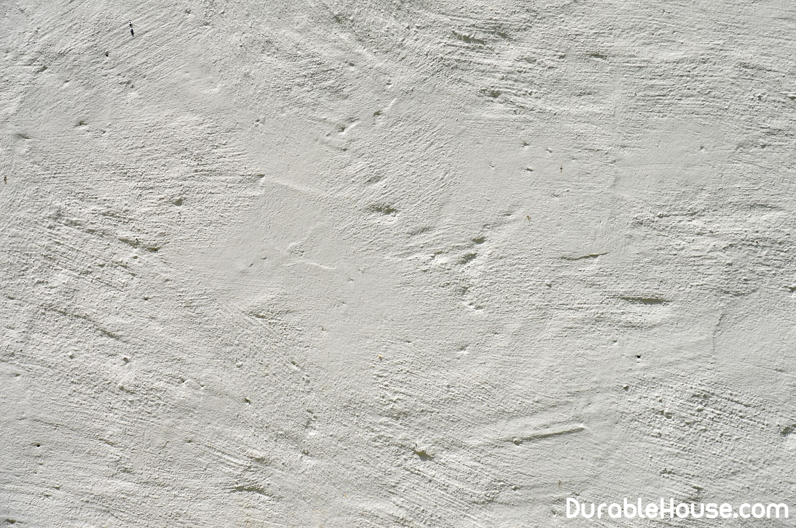

Plaster facades: all secrets
Facade work is a difficult and responsible process. We hope that our Practical tips and recommendations will be useful for you when plastering. In the article Consider a process that involves the product of the initial alignment with Warming the walls and applying a decorative layer.
Grout the decorative layer
- Remove the old coating, completely clean the surface. When repairing plaster Dismantle only areas that have been deformed or lagged behind the wall. Define Such surfaces by a dull sound when tapping a hammer. If the damage to the wall - More than 30% of the total area, clean the entire façade: the rest of the old surface Soon collapses.
- After completion of roughing works on the wall, apply a primer coat for better adhesion Materials and protection from fungus and mold in the presence of antibacterial components.
- Apply a layer of waterproofing at the base level to protect part of the house, the closest Located to the ground, from moisture. Use bitumen or special compounds on it. Basis. Well proven and rolled materials, recorded with the help of Special fasteners or tape.
- The external location of the protection against cold allows the dew point and Avoid condensation. As a heater it is possible to use expanded polystyrene. It is fixed directly to the wall with the help of a planting gypsum or special fasteners. Seal the joints with adhesive tape.
- Reinforcement - using a metal mesh, which is attached to the wall by special Impact dowels. Thanks to such a system, a solid foundation is obtained, which is excellent Keep the solution on the surface, not letting it fall, which is important when creating thick Layers.
The reinforcing mesh should be installed without Strong tension, but at the same time it should not sag. Some masters prefer Use a material with a fixed size of cells, which greatly facilitates Work.
- If the work is done for the first time and with their own hands, then professional masters advise Use a metal profile, fixed to the planting gypsum. It will withstand Even strong effects, and the fastening mixture will quickly solidify, which will save weight Time. Set beacons at the same distance from each other, equal to the length Rule, from which take 20 cm. This arrangement is considered the most convenient for Work.
After the planting gypsum on the beacons has solidified, all The surface is once again treated with a primer to increase adhesion to the material.
- Align the beacons, along the plane being guided by the plumb lines and threads, which are stretched over The diagonal of the surface between the corners. Such a plumb line should control the plane Surface and is installed before the manufacture of the guides.
- Apply the stucco mixture to the surface of the wall in the space between the beacons, you can Manually, but it is better to use special stations (you can rent it). They are not only Mix the solution, but also deliver it to a certain height, where they make a draft.
Apply plaster mixture A layer equal to the surface facets of the beacons. Then, using the rule, draw the mixture along the Guides. Remains of plaster are removed separately to fill the places where it is not Enough. After the mixture has hardened, apply a primer - a connecting element between the layers.
Next, the wall should be covered with decorative mixtures for plastering. We advise in detail To study the instructions for the operation of the material and to use familiar materials in the work. Also do not interfere with the advice of specialists and other benefits.
- After the application of the decorative layer and its congelation, it is possible to further process the walls Primer. It will serve as protection from shedding and will strengthen adhesion to paint or varnish. If It is not necessary to apply a decorative layer, then the surface can be treated with polyurethane Grater with water. So it will turn out smooth and very even.